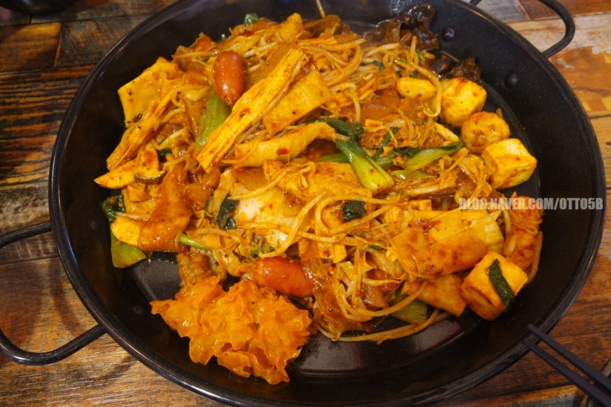

마라샹궈 만들기

재료 준비
- 마라샹궈 소스
- 고추기름
- 대패삼겹살
- 편마늘
- 대파
- 알배추
- 느타리버섯
- 청경채
- 목이버섯
- 건두부
- 중국당면
- 분모자 당면
- 새우
만드는 방법
- 물에 불려야하는 건조 식재료들은 미리 물에 불려놓는다
- 대파의 줄기 부분을 다져준다
- 마늘은 편 썰어준다
- 알배추를 한 입 크기로 손질한다
- 느타리버섯과 목이버섯도 먹기 좋은 크기로 손질한다
- 달궈진 팬에 고추기름 3바퀴(약 5~6큰 술)을 두르고 편마늘과 다진 대파를 넣고 볶는다
- 마늘향이 올라오고 대파가 노릇하게 익으면 대패 삼겹살을 넣고 볶는다
- 대패삼겹살이 익을 때 모든 재료를 넣고 센 불에 골고루 섞는다
- 마라 소스를 넣고 모든 재료가 익을 때까지 볶아준다